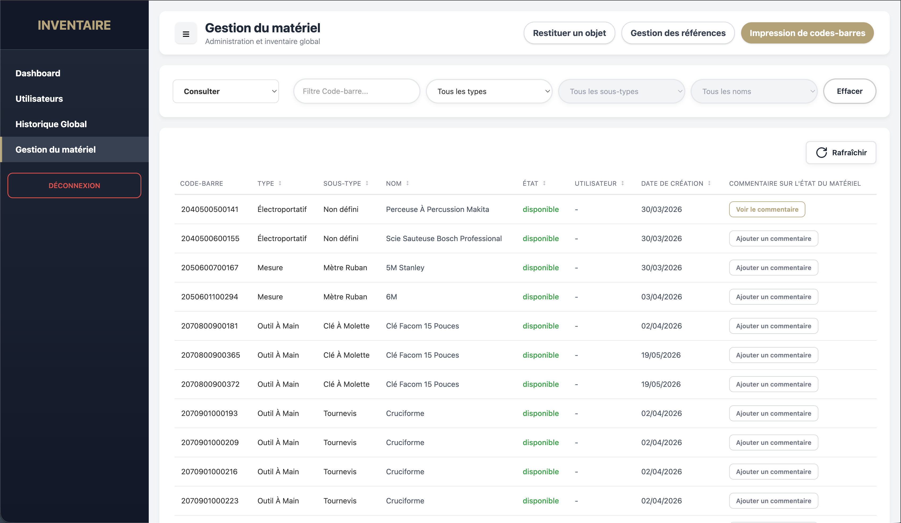
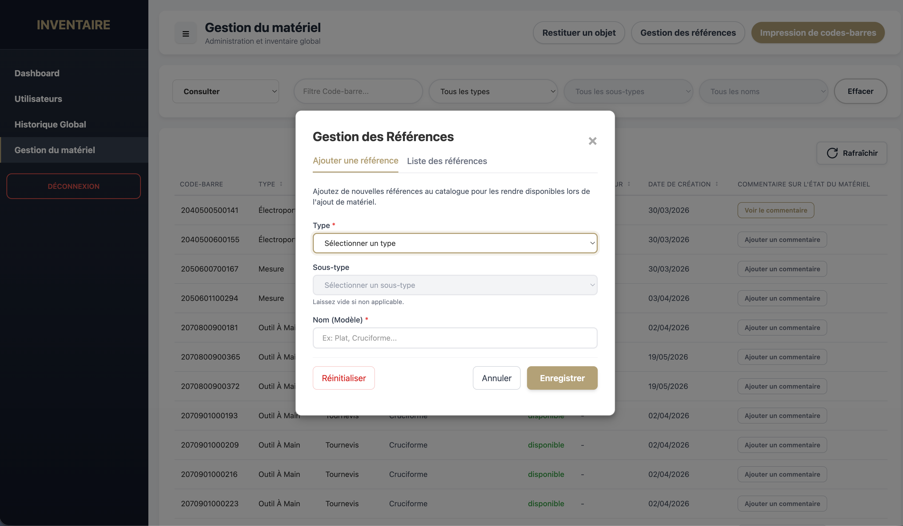
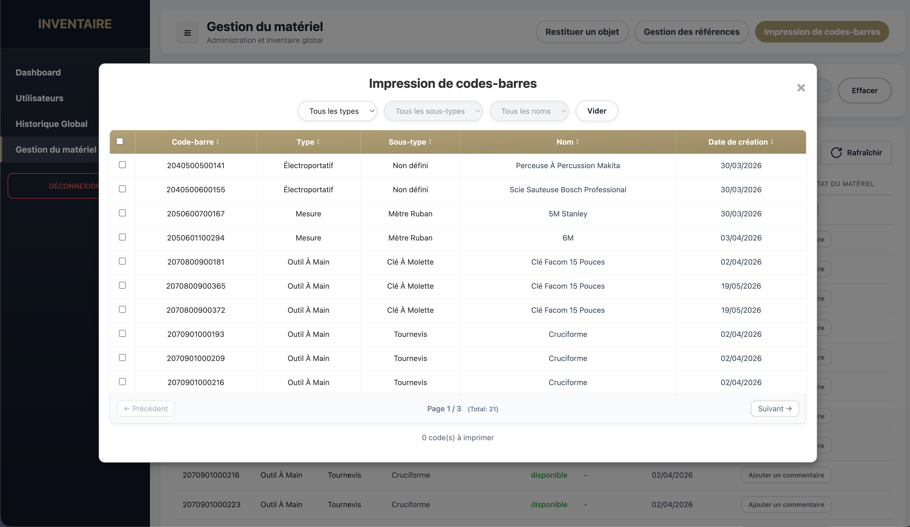

Gestion de Prêts de Matériel
Une application web complète développée pour le lycée Marcel Sembat (BTS CIEL IR 2026), permettant de gérer efficacement les entrées et sorties d'équipements pour le laboratoire. L'application identifie le matériel via des codes-barres et les emprunteurs via leur carte d'accès à l'établissement.
L'Histoire du Projet
Ce projet a été réalisé en équipe pour répondre au besoin de l'assistante de laboratoire. Mon rôle s'est concentré sur la gestion du matériel : création de l'IHM dédiée, mise en place de l'identification par codes-barres et conception de la base de données de test.
Pourquoi une application web ?
Nous avons choisi les technologies web pour bénéficier d'une
meilleure qualité de rendu et de la facilité d'hébergement local
(LAMP).
Technologies Utilisées
- HTML / CSS / JavaScript vanilla
- Tailwind CSS (Design responsive & UI)
- PHP vanilla (Backend MVC, API RESTful)
- Base de données MariaDB (PDO, requêtes préparées)
- FPDF (Génération de PDF)
Fonctionnalités Clés
📦 Gestion du Matériel
Ajout et suppression de matériel avec création dynamique d'une arborescence de références.
🔍 Identification Codes-barres
Génération automatique et impression de codes-barres (EAN-13), permettant une recherche et un suivi instantanés via une scannette.
📄 Exportation PDF Dynamique
Génération côté serveur de l'inventaire au format PDF avec algorithme de redimensionnement proportionnel des colonnes.
⚡ Architecture MVC & API
Séparation claire des responsabilités, interactions asynchrones fluides sans rechargement de page et sécurité renforcée (sessions PHP, PDO).
Aperçu de l'Application



Envie de découvrir le projet ?
Découvrez le code source et testez l'application par vous-même.
⚡ Tester sur GitHub